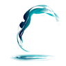

水の動きを見る
トップページの映像や解説から、水の流れ・渦・波を観察します。まずは気になる現象を見つけてください。

Personal Aquaご予約ページへ戻る水を見て 試して 理由を知る
頭の位置や身体の傾きを変えると、水の流れはどう変わるのでしょう。SWIM FLOW LAB では、画面上で条件を変えながら姿勢と抵抗の関係を観察し、研究に基づく解説で理解を深められます。
トップページの映像や解説から、水の流れ・渦・波を観察します。まずは気になる現象を見つけてください。
シミュレーターで姿勢・速さ・傾きを調整します。結果の数値と水の流れを一緒に見ながら、違いを確かめられます。
形状抵抗・摩擦抵抗・造波抵抗の説明を読み、参考研究で比較した条件や、結果を使える範囲まで確認できます。
シミュレーターは条件の違いを学ぶための教育用モデルです。個人の泳速度・記録の予測や、実測の流体解析を示すものではありません。生成した説明画像は、その旨を各ページに記載しています。
記事一覧から問いを探す